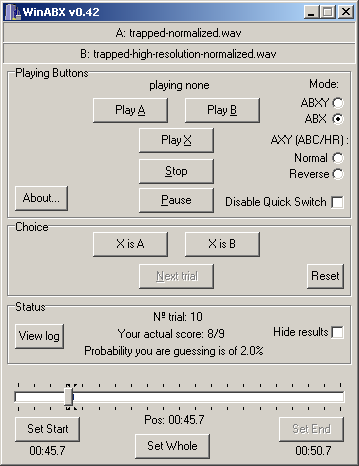

This article describes some methods for improving the audio quality of Csound pieces, and also a methodology for evaluating audio quality and improving one's hearing by using a software-based ABX comparator.
Introduction
Hearing is like thinking: you think you are thinking, but if you go to school and study with a good teacher of thinking, you learn that you only thought you were thinking. Similarly, the naive ear hears things that are not there—things one hopes to hear, or fears to hear—and fails to hear other things that really are there—things for which one has not consciously and reliably heard a standard of comparison.
This article contains two main sections, one much more important than the other.
The first section is a laundry list of techniques that have been found to improve the subjective, or artistic, sound quality of "tape music" style compositions rendered using Csound [1]. For the most part, these techniques have to do with choosing the best opcodes for a particular task, avoiding certain signal processing artifacts such as clicking and aliasing, and understanding how to balance levels and frequencies for a transparent listening experience.
These techniques cover ground that normally comes under the heading of several fields, including software instrument design, musical composition and arrangement, and mastering.
To illustrate the use of these techniques, I have applied some of them to two well-known sample compositions that are distributed with Csound. In the Csound/examples directory, you will find both the original and high-definition rendering of Trapped in Convert, and both the original and high-definition rendering of Xanadu.
The second section describes a scientific approach to discovering the artistic effect of these and other techniques. One renders the same piece twice in almost exactly the same way, differing only by one opcode choice, or one level change, or one parameter of some other objective technique. One then listens to two renderings of the piece using an ABX comparator [2], a small software application. The comparator allows you to play a selected segment of sound first from one known source A, then from another known source B, and finally from an unknown source X chosen completely at random from A or B. One must then guess whether A or B was the source of X.
This is an absolutely reliable way of finding out what one actually can and cannot hear. Scientifically speaking, it is a double-blind experiment. The experimenter (the ABX software) does not know which source was chosen for the X segment, and the subject (the listener) also does not know which source was chosen. Therefore, there is no opportunity for subjective bias to influence the results—at least, not as long as one does not start throwing out results one does not like. (It is surprising how tempting this can become!) The binomial theorem gives the likelihood for N trials that one has identified X by chance and not skill. It does not take many trials to reduce the odds that one has identified X by sheer luck to the vanishing point.
Even better, because the ABX comparator is so reliable, it can be used to learn how to correctly discriminate the smallest perceptible differences. In other words, the ABX comparator teaches one to hear. That is the real reason for using this tool with Csound. And Csound is uniquely well suited to it, for in live performance, or even in a recording studio, it is very hard to produce two versions of the same piece that differ only in one small parameter. But with Csound, all it takes is a text editor.
To illustrate the use of the methodology, I suggest some segments in the two renderings of Trapped in Convert and Xanadu to hear using the ABX comparator. I am confident that after getting used to the comparator, after only a few trials many listeners will experience a sense of revelation—just as I did.
1 Audio Quality in Csound
Currently, studio recording is done to stereo or surround sound (5.1 or 7.1) on computers, hard disk recorders, or professional digital audio tape (DAT) recorders using 24-bit or floating-point samples at a rate of 48,000, 88,200, 96,000 or even 192,000 sample frames per second. This is "high-definition audio."
At the present time, the only consumer electronics formats that can reproduce high-definition audio are DVD-Audio, high-definition audio tracks that may exist on some DVD-Video discs, SACD, and of course high-definition computer soundfiles. CD-quality audio is of rather lower definition: stereo sound with 16 bit integer samples at 44,100 samples per second.
High-definition audio, on good speakers or earphones, sounds distinctly airy, present, spacious, and undistorted. CD-quality audio, by contrast, can sound flat, shrill, harsh, and flat or boxed in. Usually, this is the result of cumulative mistakes made in this less forgiving medium—CDs actually are precise enough to reproduce most of what we hear. Therefore, CDs made by experts can sound very good indeed, except for their more limited dynamic range and slightly less detailed quiet sounds. Normally, it takes educated ears to hear these differences.
Vinyl records of high quality are not directly comparable to digital recordings. They have their own virtues and flaws. They are more detailed, airy, and spacious than CDs, but can have harmonic distortion, rumbling, hiss, and crackling. In general, well-made records, especially if pressed from direct metal masters, are roughly equal to high-definition audio in aesthetic quality, even if they are not really as precise.
All of these remarks set aside questions of "warmth" or "musical quality" in sound. Vinyl records, audio tape, and analog electronics introduce a little harmonic distortion, which creates a soft, burnished glow on the sound that some people prefer to hear. Such "warmth" is not what this article is about. If the composer or producer wants this sound, it can can easily be created using Csound alone, without any analog gear, simply by convolving the signal with an appropriate impulse response.
Csound is eminently capable of high-definition audio. It can render to any number of channels, at any sampling rate, using floating-point samples. Csound also contains high-quality software implementations of all the effects applied by mastering engineers. Therefore, Csound can sound as good or better than the best studio gear.
If you have a professional or semi-professional audio interface on your computer, you can play high-definition soundfiles made with Csound, although you will not hear their full dynamic range unless you have professional monitoring gear. In fact, some newer "media center" or "multimedia production" computers now come with built-in high-definition audio systems. You can detect the existence of such a system on Windows PCs by using the Control Panel, Sounds and Audio Devices dialog, Hardware tab, and looking in the list of devices for something like the words "High Definition Audio CODEC" or "Internal High Definition Audio Bus," as shown in Figure 1. For example, Intel's high-definition chipset supports up to eight channels of 32 bit samples at 192,000 sample frames per second.
Figure 1: Windows Driver for High-Definition Audio
The constant goal in critical listening is to hear as accurately as possible the signal as it actually exists on the recording. Similarly, the constant goal in audio production is not to make a piece sound good on a typical listener's sound system—it is to make the piece sound as good as possible on the most accurate possible listening system . If you lose sight of these realities for any reason, then whether you know it or not, you will become lost in a wilderness of illusions. Experienced mastering engineers know that making a piece sound good on the most accurate possible sound system will make the piece sound better on most listeners' systems and worse on a few, whereas trying to make the piece sound good on one sort of inferior sound system will indeed make the piece sound much better on that one type of system, but only at the cost of making it sound much worse on almost all other systems.
I strongly recommend that you listen to all soundfiles from this article through real studio monitor speakers, with the flattest possible frequency response, in an acoustically deadened room, at a volume that is about as loud as you can listen to indefinitely. If you don't have such a listening environment, then use real studio monitor headphones plugged into a high-definition interface.
Specific technical advice in decreasing order of importance (all this assumes you don't care how long it takes to render a piece, only if it sounds good):
- Some of the sounds made by Csound have no counterpart in other kinds of music. They may contain excessive high frequencies, aliasing distortion, or other kinds of noise. On the other hand, the sounds can be of extreme clarity and precision—hyper-real. You need to be constantly aware of what your sounds actually sound like.
- Always render to floating-point soundfiles at 88,200 sample
frames per second.You can translate them to 24 bits or to CD
quality later if you want, but having the extra precision and
dynamic range is vital. There is no audible difference in quality
between 88,200 and 96,000 sample frames per second, but 88,200
can be translated to CD quality by direct downsampling, whereas
96,000 requires fancy filtering and lots of time.
- If you use sampled sounds, use the best samples you can
possibly find. Pay if you must!
- Also if you use sampled sounds, beware of their own ambience
clashing with any reverberation or other ambience you set up
using Csound. Samples may also have unwanted noise—it may
be possible to de-noise them (Csound has facilities for doing
this too).
- Use a "de-clicking" envelope to wrap all your instrument
final output signals.
- Watch out for aliasing, which can make sounds buzzy or harsh,
in frequency modulation and wavetable oscillators. Aliasing
happens when the signal contains frequencies above half the
sampling rate (the Nyquist frequency), so that under digital
sampling they reflect or fold back under the Nyquist frequency.
For so-called "analog" sounds with simple waveforms such as
square or sawtooth waves, use non-aliasing opcodes such as
vcoorvco2. You do not need to worry about aliasing with plain sine or cosine waves.
- For final renderings, always render with
ksmps=1.
- Use a-rate variables for envelopes and, in general, wherever
opcodes permit. This enables decent results with
ksmps=100or so.
- In general, if an opcode has both an interpolating form and a
non-interpolating form, use the interpolating form, e.g. use
tableinottable.
- Use only the most precise interpolating oscillators, such as
poscilorposcil3.
- For all wavetable oscillators, the larger the wavetable, the
less noisy the signal; 65537 is not too big.
- Be vigilant for artifacts and noise introduced by various
digital signal processing algorithms, especially echoes in
reverberation. Don't over-use effects—this is a very common
error that you can fix by listening to good examples of studio
and live recording.
- Try rendering with dither (
-Zoption).
- Experiment with some modest compression, e.g. by using the
compress or dam opcodes.
- Use the 64-bit sample version of Csound.
The above are technical considerations. Artistic considerations are more subjective, but the following rules of thumb are generally followed in music production:
- For art music, the use of signal processing and effects
should be minimized. In general, the listener should not be aware
that such effects have been used. If they are audible to the
listener, they should normally be perceived as being an integral
part of a particular voice.
- If more than one voice is sounding at the same time, the
composer usually intends either to fuse the sounds, or to
separate the sounds. To fuse the sounds, their spectra should
overlap, their spatial locations should overlap, and their
pitches should either be a unison, or in an octave relationship.
Their envelopes may or may be the same shape, but the attack
portions should not be too different. To separate sounds, any one
or more of the above considerations may be negated: their spectra
should not overlap; and/or their spatial locations should be
different; and/or their pitches should be different; and/or their
envelopes should not be the same shape.
- Usually, solo voices and bass lines should be acoustically
separated from the rest of the music.
- Computer music and electroacoustic music tends to be shrill
in comparison with historical traditions for art music. Many such
pieces can be improved by rolling off the treble equalization or,
better yet, changing the design of the instruments
themselves.
- Computer music and electroacoustic music tends to be bass-shy
in comparison with other genres of music. Many such pieces can be
improved with a little "big bottom."
- Computer music and electroacoustic music tends to be loud in
comparison with other genres of music, excepting the louder forms
of rock and dance music. Some such pieces would benefit from a
quieter average level combined with a larger dynamic range.
- Both computer music and electroacoustic music use a great
deal of signal processing, which often causes pieces to acquire a
particular artifact technically known as "convolution smear." It
can sound like smearing, ringing, or a sheen overlaying the
sound. This sound may or may not be artistically desirable, but
the composer needs to know when it is there so that he or she can
decide whether or not to use it.
- Computer music, as opposed to purely electronic music, uses
digital signal processing which, in turn, frequently causes
aliasing distortion. It can manifest itself as false tones, false
harmonics, or graininess or grittiness in sounds. Again, the
effect may or may not be desirable, but the composer needs to
know when it is there.
- Computer music, electroacoustic music, and studio recordings in general tend to combine sounds into an artificial sound stage. Our sensation of the location of sounds is complex, rather accurate, and depends on several cues including the relative loudnesses of a sound with respect to direction, the relative phases of the sound with respect to different directions, the type of echoes or reverberation associated with the sound, and even the frequency equalization of the sound (high frequencies are attenuated by distance). Most recorded music features a collapsed, artificial sound stage. In computer music and electroacoustic music, especially when using sampled sound, it is common to use only relative loudness as a spatial cue, and to attempt to place sounds with quite different reverberant qualities onto the same sound stage. Again, this may or may not be desirable, but the composer needs to hear what the sound stage actually is, and to be able to identify its causes....
2 Using the ABX Comparator
You can download a useful free ABX comparator from http://www.kikeg.arrakis.es/winabx. Install this on your PC.
This article assumes that you have installed the double-precision version of Csound 5.03.01 using the Windows installer. In the Csound/examples directory, you will find both the original and high-definition versions of Trapped in Convert and Xanadu:
trapped .csd
trapped-high-resolution.csd
xanadu .csd
xanadu-high-resolution.csd
If you do not find these files in your installation of Csound, you can download them directly from the Csound CVS repository at http://csound.cvs.sourceforge.net/csound/csound5/examples.
To see what changes I have made to improve sound quality in
these pieces, you can run a program such as WinMerge [3] to highlight the differences between versions, as
shown in Figure 2.
{kind=link}
Figure 2: Comparing Versions
of Xanadu
Click image to see the
full size version
Open a Windows console, navigate to your Csound/examples directory, and render each of the two pieces in both the normal version and the high-definition version, using the following commands:
csound -R -W -s -o trapped .wav trapped .csd
csound trapped -high - resolution .csd
csound -R -W -s -o xanadu .wav xanadu .csd
csound xanadu -high - resolution .csd
Use a soundfile editor such as Audacity [4] to determine if the soundfile amplitudes are the same in both renderings—which means within 0.25 dB of each other. If, but only if, the amplitudes of the renderings are different, then use the editor to remove any DC bias, and normalize the level in each of these soundfiles to -3 dB, to ensure that each source has the same subjective loudness, as shown in Figure 3.
Equal amplitudes are essential whenever you do an ABX comparison, because:
- People are quite sensitive to loudness.
- Given two sounds A and B, if A is louder, people will tend to prefer it, even if at the same loudness they might prefer B.
- Different synthesis and signal processing techniques, e.g. compression, can modify signal amplitudes.
{kind=link}
Figure 3: Normalizing Trapped
in Convert
Click image to see the
full size version
When all of your pieces are rendered and, if necessary, normalized, run the ABX comparator and load the two versions of Trapped in Convert. Select the ABX mode. Select a segment beginning at 8 seconds and ending at 10 seconds. The reason for using such a short segment is that human short-term memory for sounds is much more accurate than long-term memory, and short-term memory only extends to about 5 seconds. Make sure that your listening volume is loud, but not uncomfortable. If while listening your ears hurt or pop, immediately reduce the volume until they do not.
Listen to A and B several times to see if you think you can hear any differences between them. Then, listen to X and decide whether X is A or B. You are free to listen to A, B, and X any number of times and in any order. I find that the best approach is to listen to A and B repeatedly until some feature that is different begins to emerge from the listening process. I can then listen to X and see if it does or does not have this discriminating feature.
When you have made up your mind, click on the X is A button or the X is B button to indicate your
choice, then click on the Next
trial button. Keep repeating these trials. If after 10 or
20 trials the probability that you are guessing goes below 5% and
stays there, then you almost certainly actually can hear a difference between A and
B. But if after a large number of trials you can never get the
probability you are guessing to stay below 10%, then no matter
what you may think, you cannot hear any difference between A
and B. Figure 4 shows WinABX in action.

Figure 4: Using
WinABX
This is painstaking work, but it is the only way to make sure you really are hearing what you think you are hearing.
As time goes on, you should find that your hearing of this piece becomes quite a bit more perceptive. More importantly, you should be able to form a reliable judgment of which rendering is better according to your own musical taste. This may or may not be the high-definition version! The vital thing is to improve the accuracy of your hearing with respect to your own musical judgment.
You also should find that you can more quickly decide whether or not you really can hear a difference between the sources—which means that you really are improving your musical hearing.
I will not, in this article, explain what I think the differences are between the regular rendering and the high-definition rendering of Trapped in Convert. But, here are some other segments to try.
Warning: not all segments have differences that I could hear!
- 0:46 to 0:51
- 1:08 to 1:15
- 1:18 to 1:21
- 1:53 to 1:56
- 2:20 to 2:25
- 3:44 to 3:48
- 4:28 to 4:32
When you have listened to a number of segments, you may wish to try listening to each version all the way through, in order to see if you can still hear the differences that you had learned to identify.
For Xanadu, compare the following segments.
Warning: in every case, I can reliably hear a difference between the renderings!
- 0:00 to 0:02
- 0:05 to 0:07
- 0:14 to 0:17
- 0:23 to 0:24
- 0:35 to 0:38
- 0:43 to 0:48
- 0:51 to 0:55
Of course, your experience with ABX so far concerns two sources that differ by many changes in the Csound code.
If you really want to
understand what is doing on, make copies of
trapped.csd and xanadu.csd, use
WinMerge to add one modification at a time to your copies from
trapped-high-resolution.csd and
xanadu-high-resolution.csd files, and do the ABX
comparison all over for each modification.
Another source of deeper insight might be to visit Dominique Bassal's web site on mastering [5], download some of his pre-mastered/post-mastered example soundfiles, and do ABX comparisons on them. Bassal is an acknowledged expert in mastering computer music, and his on-line article The Practice of Mastering in Electroacoustics [6] provides a much more experienced and in-depth review of some of the issues (i.e., those not specific to Csound) that I have tried to cover here.
3 Conclusion
Well, I hope this article has been useful to you!
I believe that learning these methods, and above all the ABX methodology, has made an enormous difference to my own ability to hear my own music more objectively.
I also have a renewed appreciation of what I am now better equipped to realize are astonishing feats of perception and signal processing on the part of the best computer musicians, recording engineers, and mastering engineers.
And I believe my own ability to work at that level has
improved, at least a little bit, as a result of the ABX
comparator.
References
[1] Richard Boulanger. csounds.com... almost everything Csound. http://www.csounds.com.[2] KikeG. WinABX, 2005.
[3] Christian List, Dean Grimm, et al. Winmerge. http://winmerge.sourceforge.net/index.php.
[4] Audacity. http://audacity.sourceforge.net.
[5] Dominique Bassal. Mastering. http://cec.concordia.ca/pep/mastering_e.html.
[6] Dominique Bassal. The practice of mastering in electroacoustics, December 2002. http://cec.concordia.ca/ftp/The_Practice_of_Mastering.pdf.